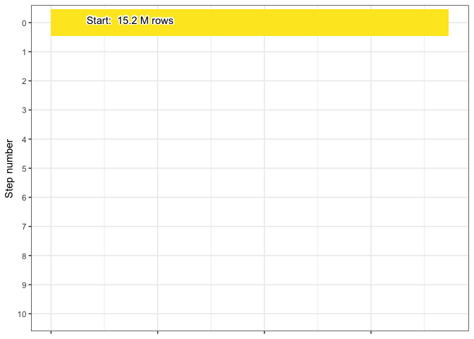
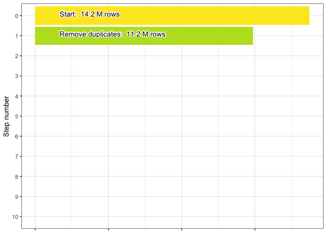
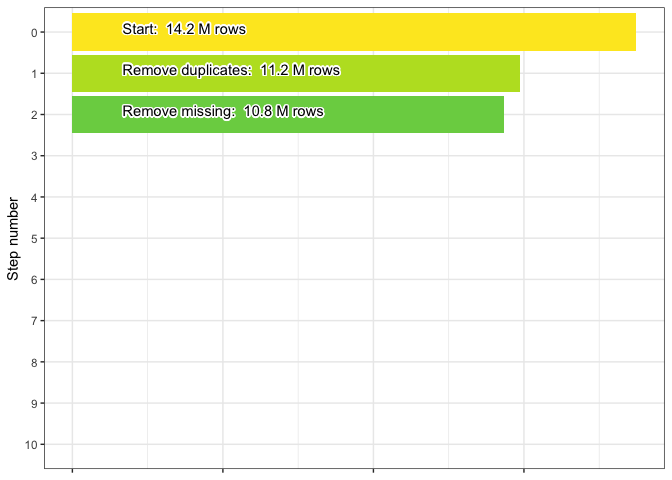

2 Pre-harmonization decision process
2.1 Justification
Following the completion of the download process described in the previous chapter, the pipeline contains raw data for a variety of potential parameters of interest. Before we begin to harmonize each individual parameter we run through a series of “pre-harmonization” steps, which ensure that each parameter will enter its individual harmonization routine with a dataset that has been formatted identically to each other parameter in the pipeline.
2.2 Initial dataset
At the start of the pre-harmonization process the WQP dataset contains the parameters chlorophyll, doc, secchi, tss and 14.2 million rows.

2.3 Missing results
Next records that have missing data are dropped from the dataset. Several criteria are used when checking for missing data. If any of the below criteria are met the row is flagged as missing:
- Both the result column and detection limit column had
NAdata - Result, result unit, activity comment, laboratory comment, and
result comment columns are all
NA - The result comment column contains any user-provided text indicating
a missing value, currently including:
analysis lost,not analyzed,not recorded,not collected, orno measurement taken
91.33 thousand rows are dropped, resulting in a final count of 13.64 million.

2.4 Filter status
We next filter the ResultStatusIdentifier column to include only the
following statuses:
"Accepted""Final""Historical""Validated""Preliminary"NA
These statuses generally indicate a reliable result having been reached,
however we also include NA in an effort to be conservative. More
specifically, when making decisions for this and other columns we
occasionally retain NA values if removing the records would otherwise
drop 10% or more of the available data. 12.01 thousand rows are dropped
from the dataset leaving it with 13.62 million remaining.
